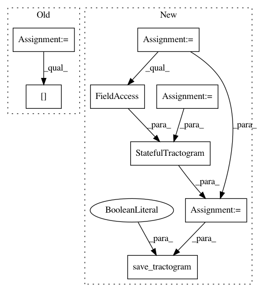

156f9955319ed9383615a7f84e077f10da3bc11a,dipy/workflows/tracking.py,LocalFiberTrackingPAMFlow,_core_run,#LocalFiberTrackingPAMFlow#Any#Any#Any#Any#Any#Any#Any#Any#Any#,81
Before Change
if save_seeds:
streamlines, seeds = zip(*tracking_result)
tractogram = Tractogram(streamlines, affine_to_rasmm=np.eye(4))
tractogram.data_per_streamline["seeds"] = seeds
else:
tractogram = Tractogram(tracking_result, affine_to_rasmm=np.eye(4))
After Change
if save_seeds:
streamlines, seeds = zip(*tracking_result)
seeds = {"seeds": seeds}
else:
streamlines = list(tracking_result)
seeds = {}
sft = StatefulTractogram(streamlines, seeding_path, Space.RASMM,
data_per_streamline=seeds)
save_tractogram(sft, out_tract, bbox_valid_check=False)
logging.info("Saved {0}".format(out_tract))
def run(self, pam_files, stopping_files, seeding_files,
use_binary_mask=False,
In pattern: SUPERPATTERN
Frequency: 3
Non-data size: 8
Instances
Project Name: nipy/dipy
Commit Name: 156f9955319ed9383615a7f84e077f10da3bc11a
Time: 2019-07-26
Author: francois.m.rheault@usherbrooke.ca
File Name: dipy/workflows/tracking.py
Class Name: LocalFiberTrackingPAMFlow
Method Name: _core_run
Project Name: nipy/dipy
Commit Name: 23a07e8601cbdba5ece453864bc6d11e3431543e
Time: 2019-07-23
Author: francois.m.rheault@usherbrooke
File Name: dipy/workflows/tests/test_align.py
Class Name:
Method Name: test_slr_flow
Project Name: nipy/dipy
Commit Name: 156f9955319ed9383615a7f84e077f10da3bc11a
Time: 2019-07-26
Author: francois.m.rheault@usherbrooke.ca
File Name: dipy/workflows/tracking.py
Class Name: PFTrackingPAMFlow
Method Name: run